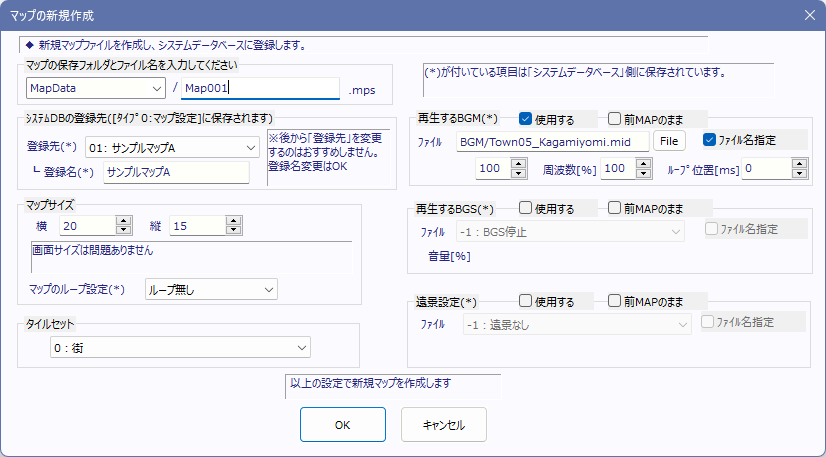

【マップの基本設定】
マップの基本設定は、メインウィンドウのレンチのアイコンボタン をクリックすることで開くことができます。
をクリックすることで開くことができます。

【ファイル名】
このマップのファイル名です。確認のため表示されているだけです。
【システムBDの登録先】
マップファイル（拡張子mps）は通常、システムDBタイプ0番のデータベースにファイル名を書き込まないとゲームで使うことができませんが、この欄を使うことで簡単にシステムDBタイプ0番にそれらを書き込むことができます。
【マップサイズ】
マップの大きさを指定します。単位はチップ数です。ループ設定も行います。
【タイルセット】
マップの描画に使用するタイルセットを選択します。
【再生するBGM・再生するBGS・遠景設定】
マップで使用するBGM、BGS、遠景を指定できます。